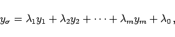
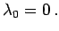

Inhalt Index DeskTop Bronstein

 Lineare Algebra Lineare Gleichungssysteme Lösung linearer Gleichungssysteme Anwendung des Austauschverfahrens
Lineare Algebra Lineare Gleichungssysteme Lösung linearer Gleichungssysteme Anwendung des Austauschverfahrens


Das lineare Gleichungssystem (4.112a) ist genau dann lösbar, wenn für das zugeordnete System linearer Funktionen (4.112b) einer der folgenden zwei Fälle gilt:
|  | (4.113) |
und es ist  Das bedeutet, das zugehörige System linearer Funktionen ist linear abhängig.